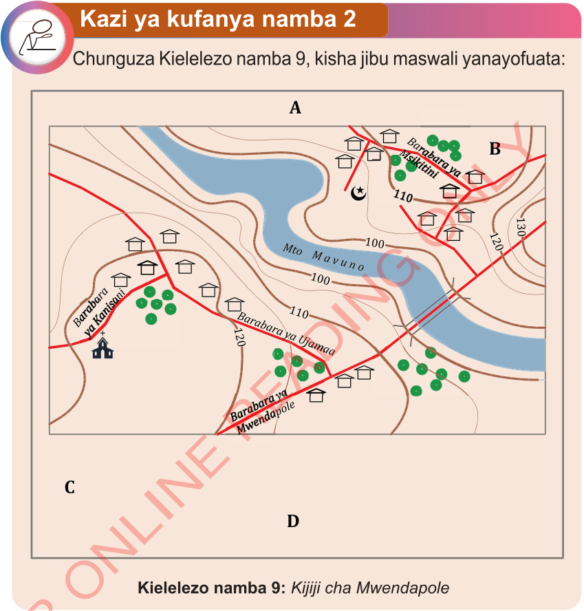

Kazi ya kufanya namba 2
Chunguza Kielelezo namba 9, kisha jibu maswali yanayofuata:

Kielelezo namba 9: Kijiji cha Mwendapole
Maswali
1. Eleza mapungufu uliyoabaini katika Kielelezo namba 9.
2. Bainisha vipengele muhimu vya ramani vilivyopaswa kuwekwa katika herufi A, B, C na D, kisha eleza umuhimu wa kila kipengele ulichoabaini.
3. Bainisha aina ya ramani iliyowakilishwa katika kielelezo namba 9.